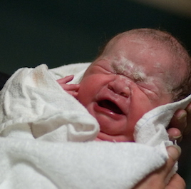

After Hours Contact and Emergency Care
At times when Craignish Specialist Centre is not open, such as over-night and on weekends, Dr McCallum may be contacted to deal with problems which cannot wait, by phoning his call service on (03) 9387 1000.
In the case of maternity issues, if you believe you are going into labour, or may have suffered a rupture of your waters, or if the baby is not moving much (after 28 weeks), or you have developed some other problem which you feel may require hospital visit or admission, you are advised to phone the Birth Suite at your chosen hospital to discuss your concerns with a midwife who will also organise a visit or admission if required.
Maternity hospital phone numbers are as follows:
- Mitcham Private Hospital: (03) 9210 3283
- Angliss Hospital: (03) 9764 6311
- Box Hill Hospital: (03) 9975 6364
If you feel that the birth of your baby is about to happen and you may not be able to get to the hospital in time, or you are having a haemorrhage (heavy bleed), or some other emergency, you should phone the ambulance on “000”.
